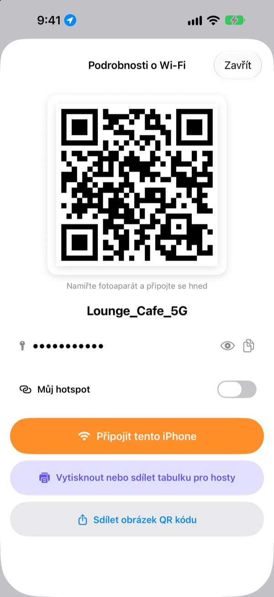
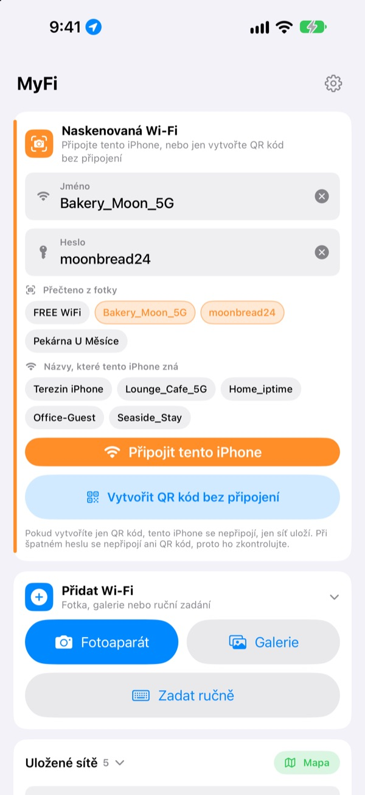
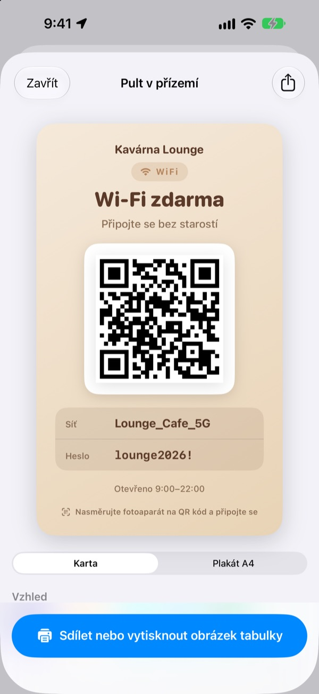
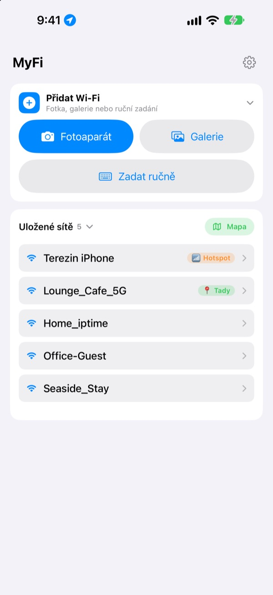

Už žádné diktování hesla.
Stačí QR kód.
Přátelé jen namíří fotoaparát a jsou připojení. Tabulka na zdi kavárny? Jedna fotka a tento iPhone se připojí. Konec překlepů při opisování.
Všechny funkce jsou zdarma. iPhone s iOS 17 nebo novějším.

Vytvořte QR kód své Wi-Fi
Změňte název nebo heslo a tabulka se hned upraví. Namiřte na ni fotoaparát telefonu a opravdu se objeví nabídka připojení.
„Jaké je heslo k Wi-Fi?“ Kolikrát už dnes?
Diktujete ho a spletete velká písmena. Opisujete tabulku ze zdi a pletete si 0 a O. A pak to vysvětlujete znovu. MyFi to zkrátí na jednu fotku a jeden QR kód.
Vyfotíte a jste připojení
Vyfoťte tabulku s Wi-Fi nebo účtenku, případně vyberte snímek z galerie. MyFi přečte název sítě a heslo a připojí tento iPhone. Je-li na tabulce i QR kód, přečte nejdřív ten, aby údaje byly přesné.
Když text není čitelný, přetáhněte útržek z fotky do pole názvu nebo hesla.

Tabulka pro hosty i s tiskem
Vyberte jeden ze 7 motivů a přidejte název, logo a řádky jako otevírací dobu. Zvolte kartu nebo plakát A4 na výšku, uložte jako obrázek nebo hned vytiskněte přes AirPrint.
Mějte víc tabulek, pro každý podnik nebo stůl, a upravujte je kdykoli.

Kam se vracíte, je nahoře
Sítě, ke kterým se připojíte nebo které sdílíte, se uloží i s místem. Až se vrátíte, bude ta síť nahoře v seznamu a všechna uložená místa uvidíte na mapě.
QR kód nejčastěji sdílené Wi-Fi si dejte jako widget na plochu nebo zamčenou obrazovku. Když se host zeptá, jen ukážete displej.

Začnete ve třech krocích
- 1
Otevřete aplikaci
Jednou požádá o polohu, protože iOS prozradí název aktuální Wi-Fi jen aplikacím s tímto přístupem.
- 2
Vyfoťte nebo zadejte
Vyfoťte tabulku, nebo jednou zadejte heslo ke své Wi-Fi.
- 3
Připojte nebo ukažte
Připojte tento iPhone, nebo ukažte QR kód fotoaparátu druhého.
Kde co najdete
- Připojení z fotky tabulky
Přidat Wi-Fi, pakFotoaparátneboGalerie, pakPřipojit tento iPhone- Ruční zadání údajů
Přidat Wi-Fi, pakZadat ručně- Jen vytvořit QR kód
Vytvořit QR kód bez připojení- Poslat QR kód ve zprávě
- Klepněte na uloženou síť, pak
Sdílet obrázek QR kódu - Tabulka pro hosty
- Klepněte na uloženou síť, pak
Vytisknout nebo sdílet tabulku pro hosty - Vlastní hotspot jako QR kód
- Klepněte na uloženou síť a zapněte
Můj hotspot - Připojit nebo sdílet jedním tahem
- V seznamu přejeďte doprava pro připojení, doleva pro sdílení
- Zobrazit uložená místa
MapavedleUložené sítě- QR kód na ploše
- Podržte prst na ploše a přidejte widget MyFi
QR kód Wi-Fi
QR kód otevřete hned i přes Siri nebo aplikaci Zkratky.
Všechny funkce jsou zdarma
Zdarma
- Připojení k Wi-Fi z fotky
- Vytváření QR kódů a sdílení jako obrázek
- Tabulky pro hosty v 7 motivech, karta nebo plakát A4, tisk přes AirPrint
- Widgety na plochu a zamčenou obrazovku
- Mapa uložených Wi-Fi
- Bez reklam a bez registrace
Spropitné (dobrovolné)
- Pokud se vám aplikace líbí, můžete vývoj podpořit spropitným
- Spropitné nic neodemyká. I bez něj máte všechny funkce
Spropitné je malá jednorázová platba.
Žádné předplatné a žádné placené funkce.
Časté dotazy
Proč musím heslo zadat sám?
iOS nedovolí žádné aplikaci číst hesla k Wi-Fi uložená v zařízení. MyFi proto rozpozná název sítě a heslo zadáte jen jednou. Pak už použije uložené.
Nevidím název Wi-Fi, ke které jsem připojený.
iOS dává název Wi-Fi jen aplikacím s přístupem k poloze. Povolte MyFi v Nastavení › Soukromí a zabezpečení › Polohové služby. Poloha slouží jen ke čtení názvu sítě a k poznání míst, kam se vracíte.
Název nebo heslo se přečetly špatně.
Přibližte se a foťte rovně. Pokud to pořád nesedí, přetáhněte správný útržek z fotky do pole nebo ho opravte ručně. Má-li tabulka QR kód Wi-Fi, MyFi ho přečte a vyplní přesné údaje.
Jaké tabulky umí přečíst?
Nejlépe zvládá tabulky v angličtině nebo korejštině s popisky jako ID, PW, SSID, Network nebo Password. I bez popisků najde řádek, který vypadá jako heslo. QR kód Wi-Fi na tabulce přečte přesně v jakémkoli jazyce.
Jak se někdo připojí přes můj QR kód?
Na iPhonu i Androidu stačí namířit vestavěný fotoaparát na kód a klepnout na nabídku připojení. Žádnou aplikaci nepotřebuje.
Uvidí ostatní moje heslo?
QR kód obsahuje standardní přihlašovací údaje k Wi-Fi. Jestli ho sdílíte, rozhodujete vždy vy, a na tabulce pro hosty můžete heslo skrýt.
Proč se nemůžu připojit ke svému hotspotu?
Osobní hotspot iPhonu je tento telefon sám, k sobě se připojit nemůže. Zapněte Můj hotspot a MyFi ho bude brát jako QR kód pro ostatní.
Kam putují údaje o mé Wi-Fi?
MyFi nemá server. Názvy sítí, hesla, výsledky rozpoznání fotek i polohy se zpracovávají a ukládají jen ve vašem zařízení. Žádné reklamy ani sledování. Aplikace posílá do Apple iCloud jen anonymní statistiky používání a hlášení chyb, aby se dala opravovat.
Na jakých zařízeních funguje?
Na iPhonu s iOS 17 nebo novějším. Aplikace je ve 24 jazycích.
Dotazy nebo připomínky? Pište na leeo@kakao.com. Obvykle odpovídám do 2 až 3 dnů.